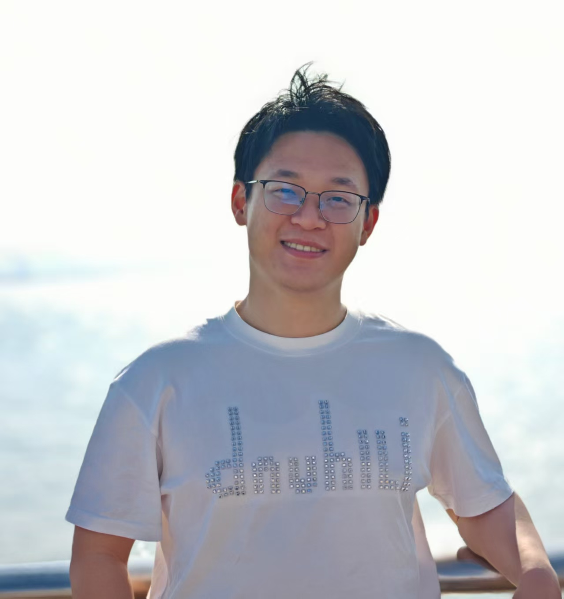

|
 |
Yuhan QinPh.D. student Department of Computer Science and Engineering |
I'm a Ph.D. student at the Department of Computer Science and Engineering, The Chinese University of Hong Kong (CUHK), under the supervision of Prof. Bei Yu since Fall 2025. Previously, I received my Bachelor degree from Beijing Institute of Technology in 2021, and Master of Engineering from University of Science and Technology of China (USTC) in 2024.
My research interests include LLM Applications and Computer Architecture.
Looking for the good news!
[C3] Zhenghao Chen, Yuan Pu, Hairuo Han, Yuntao Nie, Jiajun Qin, Yuhan Qin, Tairu Qiu, Zhuolun He, Jianwang Zhai, Bei Yu, Kang Zhao, “MAEDA: An LLM-Powered Multi-Agent Evaluation Framework for EDA Tool Documentation QA”, IEEE/ACM Proceedings Design, Automation and Test in Europe (DATE), Verona, Italy, Apr. 20–22, 2026.
[C2] Yazhuo Guo, Yuhan Qin, Song Chen, Yi Kang, “SPVT: Spiked Pyramid Vision Transformer”, IEEE International Conference on AI Circuits and Systems (AICAS), 2024.
[C1] Yuhan Qin, Yulong Meng, Haitao Du, Yazhuo Guo, Yi Kang, “MSCA: Model-Driven Search for Optimal Configuration for SpMM Accelerators”, IEEE International Conference on AI Circuits and Systems (AICAS), 2024.
[J2] Zhuolun He, Yuan Pu, Haoyuan Wu, Yuhan Qin, Tairu Qiu, and Bei Yu, “Large Language Models for EDA: From Assistants to Agents”, Foundations and Trends in Electronic Design Automation, 2025.
[J1] Haitao Du, Yuhan Qin, Song Chen, Yi Kang, “FASA-DRAM: Reducing DRAM Latency with Destructive Activation and Delayed Restoration”, ACM Transactions on Architecture and Code Optimization (TACO), 2024.
ChatEDA Lab, China
Intern, Sep. 2024 - Now